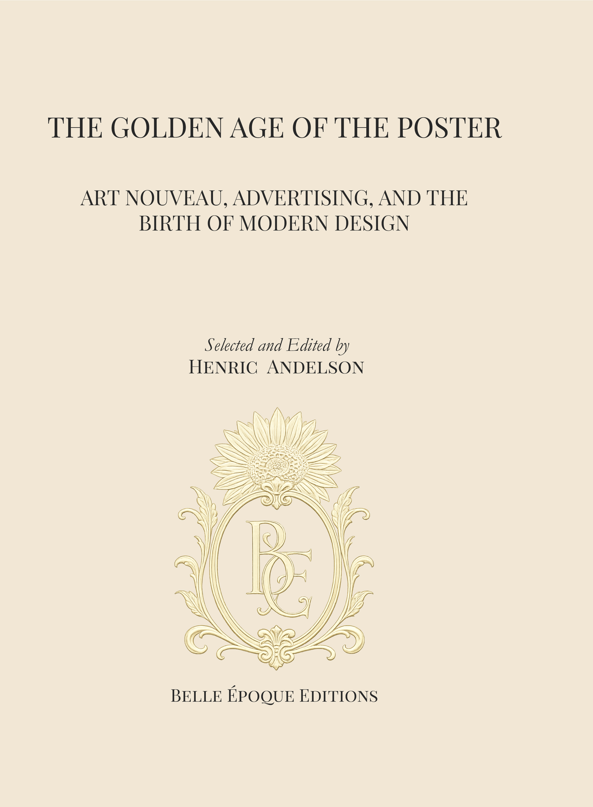

Belle Époque Editions
Art history, beautifully made.
An LT Publishing imprint devoted to public-domain visual culture, historical print, and books designed to let the artwork remain the central event.

The first volume
The Golden Age of the Poster
A large-format survey of the artists who transformed the poster into modern visual culture—from Jules Chéret, Alphonse Mucha, and Toulouse-Lautrec to Steinlen, Penfield, Privat-Livemont, Ethel Reed, Jessie M. King, and the wider international movement.
The book treats posters as art objects and historical evidence, not as decorative filler.
Browse the public-domain image library →The archive
More than 1,700 public-domain images.
The Belle Époque image library brings together poster art, illustration, decorative work, and related historical material with source and rights information preserved wherever available.
The archive supports book development, research, and responsible reuse. Its catalogue data remains separate from the publishing catalogue so that the collection can continue to grow without disrupting the rest of the site.
Catalogue
Belle Époque Editions
Current art books and works in development.